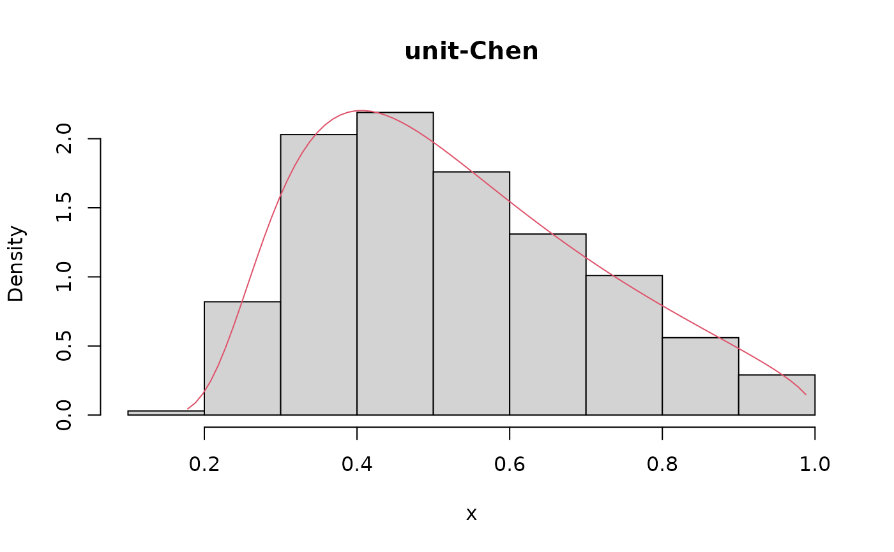
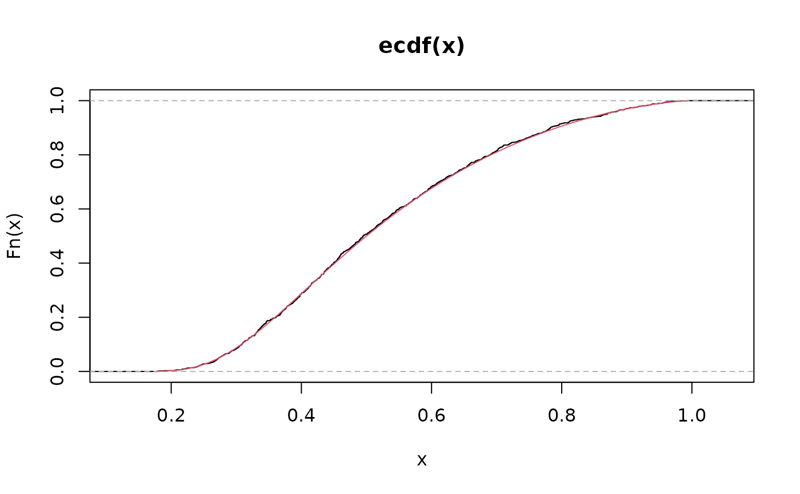
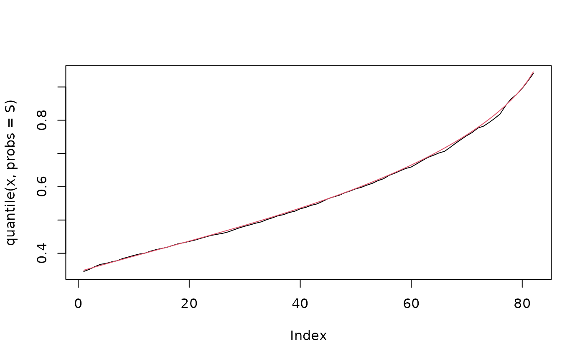

Density function, distribution function, quantile function and random number generation function for the unit-Chen distribution reparametrized in terms of the \(\tau\)-th quantile, \(\tau \in (0, 1)\).
duchen(x, mu, theta, tau = 0.5, log = FALSE) puchen(q, mu, theta, tau = 0.5, lower.tail = TRUE, log.p = FALSE) quchen(p, mu, theta, tau = 0.5, lower.tail = TRUE, log.p = FALSE) ruchen(n, mu, theta, tau = 0.5)
| x, q | vector of positive quantiles. |
|---|---|
| mu | location parameter indicating the \(\tau\)-th quantile, \(\tau \in (0, 1)\). |
| theta | nonnegative shape parameter. |
| tau | the parameter to specify which quantile is to be used. |
| log, log.p | logical; If TRUE, probabilities p are given as log(p). |
| lower.tail | logical; If TRUE, (default), \(P(X \leq{x})\) are returned, otherwise \(P(X > x)\). |
| p | vector of probabilities. |
| n | number of observations. If |
duchen gives the density, puchen gives the distribution function,
quchen gives the quantile function and ruchen generates random deviates.
Invalid arguments will return an error message.
Probability density function $$f(y\mid \alpha ,\theta )=\frac{\alpha \theta }{y}\left[ -\log (y)\right]^{\theta -1}\exp \left\{ \left[ -\log \left( y\right) \right]^{\theta}\right\} \exp \left\{ \alpha \left\{ 1-\exp \left[ \left( -\log (y)\right)^{\theta }\right] \right\} \right\}$$
Cumulative distribution function $$F(y\mid \alpha ,\theta )=\exp \left\{ \alpha \left\{ 1-\exp \left[ \left(-\log (y)\right)^{\theta }\right] \right\} \right\}$$
Quantile function $$Q\left( \tau \mid \alpha ,\theta \right) =\exp \left\{ -\left[ \log \left( 1-{\frac{\log \left( \tau \right) }{\alpha }}\right) \right]^{\frac{1}{\theta}}\right\}$$
Reparameterization $$\alpha=g^{-1}(\mu )={\frac{\log \left( \tau \right) }{1-\exp \left[ \left( -\log (\mu )\right)^{\theta }\right]}}$$
Korkmaz, M. C., Emrah, A., Chesneau, C. and Yousof, H. M., (2020). On the unit-Chen distribution with associated quantile regression and applications. Journal of Applied Statistics, 44(1) 1--22.
Josmar Mazucheli jmazucheli@gmail.com
André F. B. Menezes andrefelipemaringa@gmail.com
set.seed(123) x <- ruchen(n = 1000, mu = 0.5, theta = 1.5, tau = 0.5) R <- range(x) S <- seq(from = R[1], to = R[2], by = 0.01) hist(x, prob = TRUE, main = 'unit-Chen')